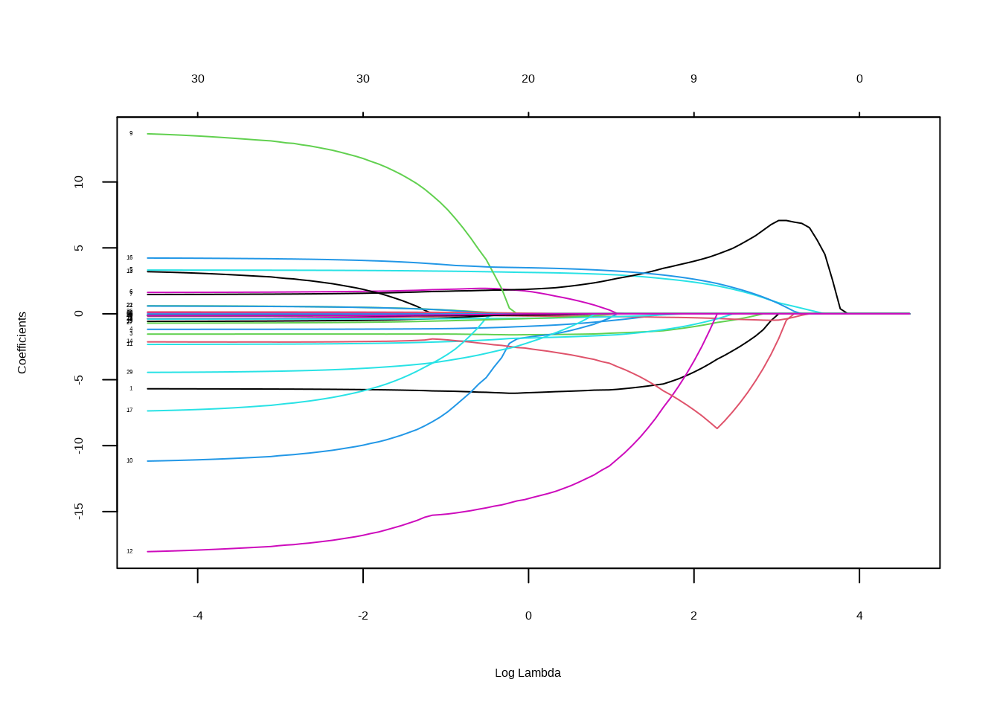
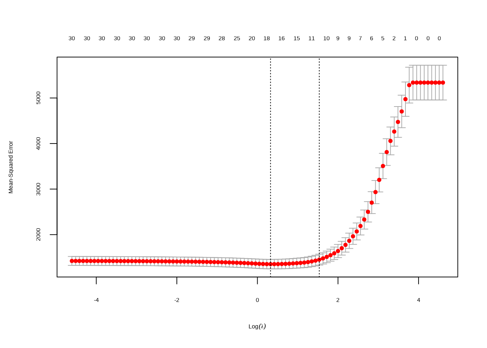
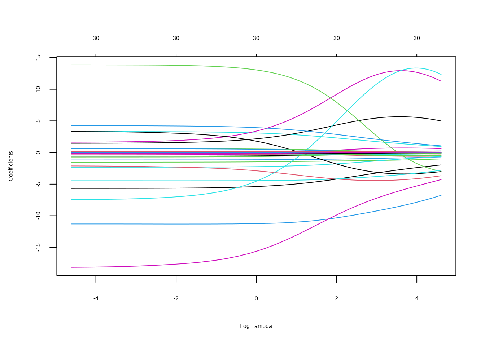
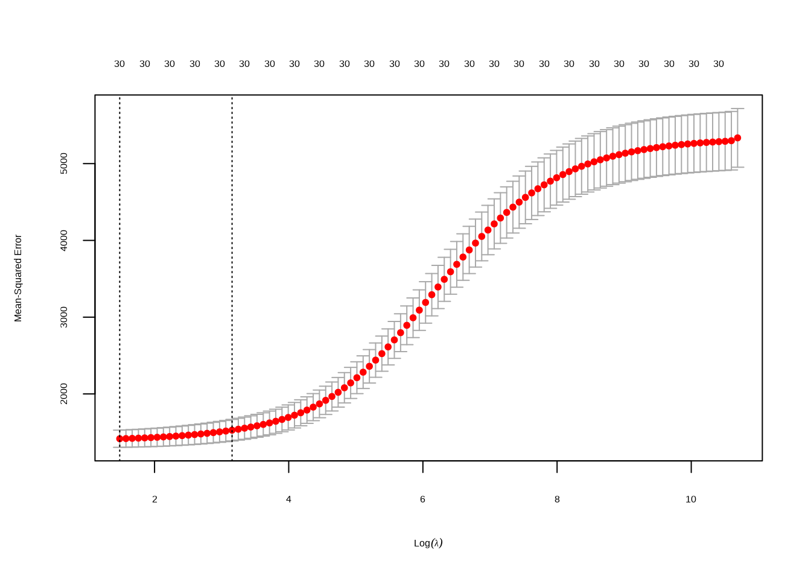
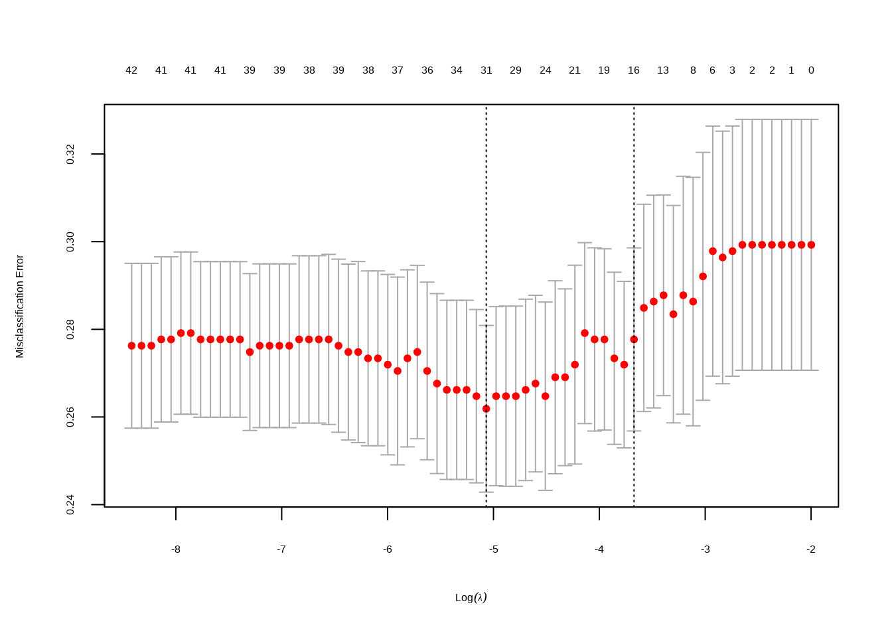

Chapter 6 正則化回帰 (lasso, ridge回帰, elastic net)
本章の内容は, 授業の R 演習スクリプト R_lasso_dist.R に対応する.
本章では, Rパッケージglmnetを使用する. 同パッケージは, Lasso (Least Absolute Shrinkage and Selection Operator) やその拡張 (Elastic Net 等) の理論研究や応用を推進した Jerome Friedman, Trevor Hastie, Robert Tibshirani らによって開発され, 維持されている.
glmnetに関する有用なマニュアル, 解説ページ:
- https://glmnet.stanford.edu/articles/glmnet.html
- https://cran.r-project.org/web/packages/glmnet/vignettes/glmnet.pdf
※ 本章における分析の流れは, 主として ISLR2, Ch.6 (Lab: Linear Models and Regularization Methods) を参考にした.
6.1 検証用セット法による回帰モデルの予測精度評価
データ1: 社債の信用スプレッドと企業特性 (仮想)
- credit_spread.csv, 500社 x 31変数
- spread: 社債の信用スプレッド (bp) (目的変数)
- 収益性: roa, roe, op_margin, ebitda_margin (%)
- 負債・返済能力: debt_assets (%), debt_equity (倍), net_debt_ebitda (倍), int_coverage (倍)
- 流動性: current_ratio, quick_ratio (倍), cash_assets (%)
- 規模: log_assets, log_sales, log_mcap (対数), employees_k (千人)
- 株式市場: equity_vol (%), beta, max_drawdown (%)
- 成長・投資: sales_growth, capex_assets, asset_growth (%)
- その他: rd_sales, payout, foreign_own, firm_age, board_indep, inventory_turn,
receivable_days, tokyo, listed_years説明変数が30個と多く, しかも同じ種類の指標どうし (例えば, 収益性の4指標) は強く相関している. このような状況では, 全変数を使った最小二乗法 (OLS) の推定は不安定 (係数のばらつきが大きい) になりやすく, 予測精度も下がりやすい. 正則化回帰は, 係数をゼロの方向に縮めることで推定のばらつきを抑え, 予測精度の改善を図る. ただし, 相関の強い変数に対する振る舞いは手法によって異なる. ridge回帰は相関の強い変数の係数を互いに近い値に縮めて推定を安定させるのに対し, lasso は相関の強い変数のグループから一部の変数だけを選び, どれが選ばれるかはデータの少しの違いで変わりやすい. elastic net は, 両者の中間的な性質を持つ (以下で確かめる).
library(glmnet) # Lasso and Elastic-Net Regularized Generalized Linear Models
cs <- read.csv("class/credit_spread.csv")
dim(cs)
#> [1] 500 31
round(cor(cs[, c("roa", "roe", "op_margin", "ebitda_margin", "debt_assets", "debt_equity")]),
2)
#> roa roe op_margin ebitda_margin debt_assets debt_equity
#> roa 1.00 0.81 0.83 0.82 0.03 0.01
#> roe 0.81 1.00 0.78 0.77 0.26 0.21
#> op_margin 0.83 0.78 1.00 0.79 0.04 0.00
#> ebitda_margin 0.82 0.77 0.79 1.00 0.06 0.04
#> debt_assets 0.03 0.26 0.04 0.06 1.00 0.81
#> debt_equity 0.01 0.21 0.00 0.04 0.81 1.00- 検証用セット法 (validation set approach, hold-out 法)
- データセットを学習用と検証用 (テスト用) にランダムに分割
- 学習用データセットで学習 (モデルの推定)
- 検証用データセットで予測
- 予測MSE (平均2乗誤差) を計算
まず, 比較の基準として, 全変数を使った OLS の予測精度を求めておく.
set.seed(1)
train <- sample(1:nrow(cs), 350) # 学習用 350社, テスト用 150社
lm_mod <- lm(spread ~ ., data = cs[train, ])
summary(lm_mod) # 有意な変数, 符号が不自然な変数は?
#>
#> Call:
#> lm(formula = spread ~ ., data = cs[train, ])
#>
#> Residuals:
#> Min 1Q Median 3Q Max
#> -93.614 -24.133 -0.263 23.381 90.791
#>
#> Coefficients:
#> Estimate Std. Error t value Pr(>|t|)
#> (Intercept) 193.64317 32.73297 5.916 8.51e-09 ***
#> roa -5.67828 1.67928 -3.381 0.000811 ***
#> roe -0.36806 0.68448 -0.538 0.591147
#> op_margin -1.53874 0.85467 -1.800 0.072745 .
#> ebitda_margin -1.18065 0.68862 -1.715 0.087405 .
#> debt_assets 3.31968 0.34909 9.510 < 2e-16 ***
#> debt_equity 1.60894 4.96276 0.324 0.745997
#> net_debt_ebitda 1.44942 2.17159 0.667 0.504969
#> int_coverage -0.10315 0.28364 -0.364 0.716361
#> current_ratio 13.85998 9.78118 1.417 0.157457
#> quick_ratio -11.29249 10.30596 -1.096 0.274026
#> cash_assets -2.32760 0.59499 -3.912 0.000112 ***
#> log_assets -18.20085 5.51603 -3.300 0.001078 **
#> log_sales 3.33512 4.11496 0.810 0.418265
#> log_mcap -2.10351 3.95187 -0.532 0.594901
#> employees_k -0.14447 0.43772 -0.330 0.741574
#> equity_vol 4.24657 0.52543 8.082 1.33e-14 ***
#> beta -7.49397 9.51423 -0.788 0.431481
#> max_drawdown -0.38525 0.42376 -0.909 0.363969
#> sales_growth -0.58249 0.51396 -1.133 0.257919
#> capex_assets -0.10921 1.20822 -0.090 0.928038
#> asset_growth 0.61381 0.53743 1.142 0.254256
#> rd_sales 0.59971 1.10446 0.543 0.587519
#> payout -0.39668 0.12725 -3.117 0.001991 **
#> foreign_own 0.06985 0.16410 0.426 0.670633
#> firm_age -0.14863 0.10208 -1.456 0.146367
#> board_indep 0.14206 0.17369 0.818 0.414003
#> inventory_turn -0.71241 0.47065 -1.514 0.131099
#> receivable_days -0.01691 0.10239 -0.165 0.868957
#> tokyo -4.46434 3.99777 -1.117 0.264959
#> listed_years -0.14441 0.12910 -1.119 0.264172
#> ---
#> Signif. codes: 0 '***' 0.001 '**' 0.01 '*' 0.05 '.' 0.1 ' ' 1
#>
#> Residual standard error: 35.37 on 319 degrees of freedom
#> Multiple R-squared: 0.7852, Adjusted R-squared: 0.765
#> F-statistic: 38.87 on 30 and 319 DF, p-value: < 2.2e-16
lm_pred <- predict(lm_mod, newdata = cs[-train, ])
mean((lm_pred - cs$spread[-train])^2) # テストMSE (OLS)
#> [1] 1619.031summary()の出力を見ると, 同じ種類の指標の中で, 一部だけが有意になったり, 直観とは逆の符号になったりしている変数がある.
説明変数どうしの相関が強いため (多重共線性), 個々の係数が不安定になっている.
6.2 lasso
関数glmnet()の基本操作
glmnet(): 罰則付き最尤法: GLM の推定 + elastic net による正則化
- usage: glmnet(x, y, family = c("gaussian", "binomial", "poisson", "multinomial", "cox", "mgaussian"), ...)
- 最重要パラメータ
- alpha: elastic net 混合パラメータ (デフォルト = 1)
- lambda: 正則化パラメータ (デフォルトは自動的に100個設定)glmnet()は, lm()のようなモデル式ではなく, 説明変数の行列 x と目的変数のベクトル y を引数に取る.
そこで, あらかじめ x と y を別々のオブジェクトとして用意しておく.
lasso を実行するには, glmnet()において, 引数alpha = 1と設定する.
\(\alpha\)は, lasso, ridge回帰 (後述) を包括するクラスである
elastic net のパラメータであり, 両者の正則化項の結合ウェイトを示す
(\(\alpha=1\) が lasso, \(\alpha=0\) が ridge回帰に対応).
特定のlambdaの値二つに対して実行し, 結果を比較してみる.
# lambda: 罰則 (L1 ペナルティ) の強さ
lasso_mod <- glmnet(x[train, ], y[train], alpha = 1, lambda = 10) # lambda 大 → 係数 = 0 が多い
coef(lasso_mod)
#> 31 x 1 sparse Matrix of class "dgCMatrix"
#> s0
#> (Intercept) 99.0154366
#> roa -3.3592111
#> roe .
#> op_margin -0.6402604
#> ebitda_margin .
#> debt_assets 2.0936515
#> debt_equity .
#> net_debt_ebitda 4.5497894
#> int_coverage -0.3563484
#> current_ratio .
#> quick_ratio .
#> cash_assets -0.3370671
#> log_assets .
#> log_sales .
#> log_mcap -8.5657294
#> employees_k .
#> equity_vol 2.2640570
#> beta .
#> max_drawdown .
#> sales_growth .
#> capex_assets .
#> asset_growth .
#> rd_sales .
#> payout .
#> foreign_own .
#> firm_age .
#> board_indep .
#> inventory_turn .
#> receivable_days .
#> tokyo .
#> listed_years .
lasso_mod <- glmnet(x[train, ], y[train], alpha = 1, lambda = 1) # lambda 小 → 係数 = 0 が少ない
coef(lasso_mod)
#> 31 x 1 sparse Matrix of class "dgCMatrix"
#> s0
#> (Intercept) 192.76046518
#> roa -5.98733022
#> roe .
#> op_margin -1.58526115
#> ebitda_margin -0.95638168
#> debt_assets 3.13947662
#> debt_equity 1.70020342
#> net_debt_ebitda 1.85289732
#> int_coverage -0.16548944
#> current_ratio .
#> quick_ratio -1.80353843
#> cash_assets -1.83217167
#> log_assets -14.15289140
#> log_sales .
#> log_mcap -2.53320379
#> employees_k -0.02567176
#> equity_vol 3.49216988
#> beta .
#> max_drawdown .
#> sales_growth -0.00241440
#> capex_assets .
#> asset_growth .
#> rd_sales .
#> payout -0.33561688
#> foreign_own .
#> firm_age -0.08921121
#> board_indep 0.03795158
#> inventory_turn -0.35735137
#> receivable_days .
#> tokyo -2.17788260
#> listed_years -0.00271540最初の例 (lambda = 10), すなわち, 正則化項の係数が相対的に大きい (罰則が大きい) とき, 多くの回帰係数の値がゼロ (.) になる (変数が選択されない).
他方, 二番目の例 (lambda = 1), すなわち, 罰則が小さいときは, 非ゼロの係数が増える.
lasso は, 係数の推定と変数の選択を同時に行う.
lambdaのグリッド指定によるglmnet()の一括実行
正則化パラメータ\(\lambda\)は, 数値ベクトルとして関数glmnet()に与えることもできる.
すると, 各lambdaの値に対してglmnet()が実行され, それらが一括して戻ってくる.
以下では, \(10^2\)から\(10^{-2}\)まで100個の点からなるグリッドを関数glmnet()に与える.
grid <- 10^seq(2, -2, length = 100) # lambda = 10^2 〜 10^(-2)
lasso_mod <- glmnet(x[train, ], y[train], alpha = 1, lambda = grid)
dim(coef(lasso_mod)) # 31行 (切片 + 30変数) x 100列 (lambda の値)
#> [1] 31 100戻ってきたオブジェクトから, 個々のlambdaの値に対する結果を取り出すことができる.
以下は, 50番目のグリッド点における結果を取り出す例である.
lasso_mod$lambda[50]
#> [1] 1.047616
coef(lasso_mod)[, 50]
#> (Intercept) roa roe op_margin ebitda_margin
#> 191.48940703 -5.97388117 0.00000000 -1.58400718 -0.93334791
#> debt_assets debt_equity net_debt_ebitda int_coverage current_ratio
#> 3.13368856 1.66365381 1.87799729 -0.16736233 0.00000000
#> quick_ratio cash_assets log_assets log_sales log_mcap
#> -1.72349146 -1.82750733 -13.93287557 0.00000000 -2.68148031
#> employees_k equity_vol beta max_drawdown sales_growth
#> -0.02708927 3.48722224 0.00000000 0.00000000 0.00000000
#> capex_assets asset_growth rd_sales payout foreign_own
#> 0.00000000 0.00000000 0.00000000 -0.33205085 0.00000000
#> firm_age board_indep inventory_turn receivable_days tokyo
#> -0.08658923 0.03273478 -0.34987607 0.00000000 -2.08599897
#> listed_years
#> 0.00000000
sum(coef(lasso_mod)[-1, 50] != 0) # 非ゼロの係数の数
#> [1] 18
sum(abs(coef(lasso_mod)[-1, 50])) # L1 ノルム
#> [1] 41.90085学習結果を使い, グリッド上にない新しいlambdaの値 (例えば 2) に対する回帰係数を求めることもできる.
predict(lasso_mod, s = 2, type = "coefficients")
#> 31 x 1 sparse Matrix of class "dgCMatrix"
#> s1
#> (Intercept) 177.57814463
#> roa -5.82222597
#> roe .
#> op_margin -1.53765291
#> ebitda_margin -0.68848174
#> debt_assets 3.04427467
#> debt_equity 0.83646547
#> net_debt_ebitda 2.25614729
#> int_coverage -0.19434469
#> current_ratio .
#> quick_ratio -0.96370583
#> cash_assets -1.69733537
#> log_assets -12.51538871
#> log_sales .
#> log_mcap -3.33890730
#> employees_k .
#> equity_vol 3.36311939
#> beta .
#> max_drawdown .
#> sales_growth .
#> capex_assets .
#> asset_growth .
#> rd_sales .
#> payout -0.27084338
#> foreign_own .
#> firm_age -0.03865226
#> board_indep .
#> inventory_turn -0.17892722
#> receivable_days .
#> tokyo -0.40954173
#> listed_years .lambdaを動かしたときの回帰係数の変化 (正則化パス) は, plot()で描くことができる.

右 (lambda が大きい) から左へ見ていくと, 罰則が弱まるにつれて, 変数が1つずつモデルに入ってくる様子が分かる. 図の上の数字は, 非ゼロの係数の数である.
テストデータを使った予測と, 予測MSEの計算:
交差検証によるパラメータ・チューニング
関数cv.glmnet()は, 交差検証 (cross-validation) を使って,
正則化パラメータ\(\lambda\)の”最適な”値を探す.
- cv.glmnet(): k-分割交差検証を行い, CV誤差の曲線と最適な lambda を返すset.seed(2)
cv_out <- cv.glmnet(x[train, ], y[train], alpha = 1, lambda = grid, nfolds = 10)
plot(cv_out) # 上の数字: 非ゼロの係数の数
“最適な”\(\lambda\)の決め方の一つは, CV誤差 (予測MSEの推定値) が最小となる
\(\lambda\)の値であり, これはcv.glmnet()の出力の
要素$lambda.minに格納されている.
この値をpredict()の引数sに与えることで,
対応する lasso のモデルによる予測ができる.
(bestlam <- cv_out$lambda.min)
#> [1] 1.384886
lasso_pred <- predict(lasso_mod, s = bestlam, newx = x[-train, ])
mean((lasso_pred - y[-train])^2) # テストMSE
#> [1] 1522.164代替的な\(\lambda\)の決め方としてよく用いられる方法に, 1標準誤差ルール (1 standard error rule) がある. これは, CV誤差の最小値 (\(CV_{min}\)) と, その時の標準誤差 \(se_{min}\) に対して, \(CV_{\lambda} \le CV_{min} + se_{min}\) となる\(\lambda\)の中で 最大の\(\lambda\)を選ぶものである. CV誤差最小の\(\lambda\)よりも大きな\(\lambda\)を取ることで, 選ばれる変数の数が減り, よりシンプルなモデルが選ばれる.
(lmbd_1se <- cv_out$lambda.1se)
#> [1] 4.641589
lasso_pred2 <- predict(lasso_mod, s = lmbd_1se, newx = x[-train, ])
mean((lasso_pred2 - y[-train])^2)
#> [1] 1500.546
# 選ばれた変数: 互いに相関の強い指標のグループ (例: 収益性の4指標) から,
# 一部だけが選ばれているか?
coef(cv_out, s = "lambda.1se")
#> 31 x 1 sparse Matrix of class "dgCMatrix"
#> s1
#> (Intercept) 143.2696830
#> roa -5.3983390
#> roe .
#> op_margin -1.3205209
#> ebitda_margin -0.1031488
#> debt_assets 2.7257140
#> debt_equity .
#> net_debt_ebitda 3.2911240
#> int_coverage -0.2523586
#> current_ratio .
#> quick_ratio .
#> cash_assets -1.2859068
#> log_assets -7.9330240
#> log_sales .
#> log_mcap -5.4470553
#> employees_k .
#> equity_vol 3.0033281
#> beta .
#> max_drawdown .
#> sales_growth .
#> capex_assets .
#> asset_growth .
#> rd_sales .
#> payout -0.1068294
#> foreign_own .
#> firm_age .
#> board_indep .
#> inventory_turn .
#> receivable_days .
#> tokyo .
#> listed_years .例えば, 収益性の指標では roe が, 負債の指標では debt_equity が除かれ, 相関の強い指標の中から一部が選ばれている.
lasso は, 相関の強い変数群からは「どれか1つ (少数)」を選ぶ傾向がある.
cv.glmnet()の出力の確認:
# 上記2つの '最適な' lambda のインデックス (min, 1se の順)
cv_out$index
#> Lambda
#> min 47
#> 1se 34
# 対数値 → CV誤差曲線 (上図) の2本の点線の位置
log(c(min = cv_out$lambda.min, one_se = cv_out$lambda.1se))
#> min one_se
#> 0.3256181 1.5350567CV誤差曲線 (上図) の2本の縦の点線のうち,
左側はCV誤差最小の位置 log(cv_out$lambda.min),
右側は1標準誤差ルールによる位置 log(cv_out$lambda.1se) を表している.
6.3 ridge回帰
ridge回帰は, 関数glmnet()で引数alpha = 0を指定すれば良い.
その他の実行方法や結果の見方などは, lasso の場合と同様である.
ridge_mod <- glmnet(x[train, ], y[train], alpha = 0, lambda = grid)
plot(ridge_mod, xvar = "lambda") # 係数はゼロに近づくが, ゼロにはならない

ridge_pred <- predict(cv_ridge, s = "lambda.min", newx = x[-train, ])
mean((ridge_pred - y[-train])^2) # テストMSE
#> [1] 1571.053
coef(cv_ridge, s = "lambda.min") # 全ての係数が非ゼロ
#> 31 x 1 sparse Matrix of class "dgCMatrix"
#> s1
#> (Intercept) 196.00803639
#> roa -4.64490637
#> roe -0.21207157
#> op_margin -1.38107350
#> ebitda_margin -1.08038929
#> debt_assets 2.57874559
#> debt_equity 7.25077890
#> net_debt_ebitda 3.63478940
#> int_coverage -0.29420440
#> current_ratio 10.08506916
#> quick_ratio -10.74745918
#> cash_assets -1.97413645
#> log_assets -11.53141646
#> log_sales -0.80847041
#> log_mcap -3.88847554
#> employees_k -0.28685166
#> equity_vol 3.23236765
#> beta 1.71356771
#> max_drawdown 0.18180339
#> sales_growth -0.40932105
#> capex_assets -0.22691983
#> asset_growth 0.41899401
#> rd_sales 0.32468391
#> payout -0.36800218
#> foreign_own 0.07678800
#> firm_age -0.14598447
#> board_indep 0.15079955
#> inventory_turn -0.45797298
#> receivable_days -0.04515659
#> tokyo -4.30142859
#> listed_years -0.07373507lasso と異なり, ridge回帰では, どの係数もゼロにはならない (変数選択は行われない). 係数を全体的にゼロの方向へ縮めることで, 推定を安定させる.
6.4 elastic net
elastic net は, lasso (L1) と ridge (L2) の罰則を重み \(\alpha \in [0, 1]\) で結合したものである (\(\alpha = 1\) が lasso, \(\alpha = 0\) が ridge回帰に対応する). ここでは \(\alpha = 0.5\) とする.
set.seed(2)
cv_enet <- cv.glmnet(x[train, ], y[train], alpha = 0.5, nfolds = 10)
enet_pred <- predict(cv_enet, s = "lambda.min", newx = x[-train, ])
mean((enet_pred - y[-train])^2)
#> [1] 1519.543
coef(cv_enet, s = "lambda.1se") # 相関の強い変数群をまとめて残す傾向
#> 31 x 1 sparse Matrix of class "dgCMatrix"
#> s1
#> (Intercept) 157.4241556
#> roa -4.4528213
#> roe .
#> op_margin -1.3515408
#> ebitda_margin -0.3265044
#> debt_assets 2.3424767
#> debt_equity 3.5958408
#> net_debt_ebitda 4.2582163
#> int_coverage -0.3540674
#> current_ratio .
#> quick_ratio -0.6715344
#> cash_assets -1.2704771
#> log_assets -8.4692098
#> log_sales .
#> log_mcap -5.2742249
#> employees_k .
#> equity_vol 2.9314051
#> beta .
#> max_drawdown .
#> sales_growth .
#> capex_assets .
#> asset_growth .
#> rd_sales .
#> payout -0.1499484
#> foreign_own .
#> firm_age .
#> board_indep .
#> inventory_turn .
#> receivable_days .
#> tokyo .
#> listed_years .lasso では除かれた debt_equity が, elastic net では残っている.
elastic net は, 相関の強い変数群をまとめて残す傾向がある.
テストMSE の比較
c(OLS = mean((lm_pred - y[-train])^2), Lasso = mean((lasso_pred - y[-train])^2),
Ridge = mean((ridge_pred - y[-train])^2), ElasticNet = mean((enet_pred - y[-train])^2))
#> OLS Lasso Ridge ElasticNet
#> 1619.031 1522.164 1571.053 1519.543いずれの正則化回帰も, 全変数の OLS よりテストMSE が小さい.
ただし, この比較は1回のデータ分割に基づくものであり, 分割の仕方 (set.seed() の値) によって順位は入れ替わりうる.
6.5 一般化線形モデル (GLM) + 正則化
関数glmnet()はその名が示すように,
線形回帰にとどまらず, 一般化線形モデル (GLM)
に対しても, elastic net (lasso, ridge回帰)
を実行することができる.
引数familyに, デフォルト (gaussian) 以外の
適切な確率分布を指定する.
family = c("gaussian", "binomial", "poisson", "multinomial", "cox", "mgaussian")glmnet()は, lm()やglm()等とは使い方が異なる点に注意が必要である.
glmnet() 実行上の注意点
- 欠損値 (NA) の事前処理が必要: 除去 or 補完
- モデル式ではなく, matrix クラスの x, ベクトルの y を引数に取る
- 説明変数は数値のみ (x は行列) → 質的変数 (factor) はダミー変数化が必要
→ model.matrix() で説明変数行列 (design matrix) を作る (質的変数は自動でダミー変数化)データ2: German Credit データ
german_credit_modified.csv, 1,000件
- 予測変数 (20変数): StatusAccount, DurationMonth, CreditHistory, Purpose,
CreditAmount, SavingsAccount, EmploymentSince, InstallmentRate,
StatusAndSex, Guarantors, ResidenceSince, Property, Age, InstallmentPlans,
Housing, NCredits, Job, NPeopleMain, Phone, ForeignWorker
- 目的変数: Customer [good: 優良顧客 / bad: 不良顧客]
- オリジナルデータの出所: http://archive.ics.uci.edu/ml/machine-learning-databases/statlog/german/credit_dat <- read.csv("class/german_credit_modified.csv", skip = 3, header = TRUE)
str(credit_dat)
#> 'data.frame': 1000 obs. of 21 variables:
#> $ StatusAccount : chr "lt_0DM" "lt_200DM" "none" "lt_0DM" ...
#> $ DurationMonth : int 6 48 12 42 24 36 24 36 12 30 ...
#> $ CreditHistory : chr "E" "C" "E" "C" ...
#> $ Purpose : chr "TV_etc" "TV_etc" "education" "TV_etc" ...
#> $ CreditAmount : int 1169 5951 2096 7882 4870 9055 2835 6948 3059 5234 ...
#> $ SavingsAccount : chr NA "lt_100DM" "lt_100DM" "lt_100DM" ...
#> $ EmploymentSince : chr "ge_7yrs" "lt_4yrs" "lt_7yrs" "lt_7yrs" ...
#> $ InstallmentRate : int 4 2 2 2 3 2 3 2 2 4 ...
#> $ StatusAndSex : chr "M_single" "F_divorced" "M_single" "M_single" ...
#> $ Guarantors : chr "none" "none" "none" "guarantor" ...
#> $ ResidenceSince : int 4 2 3 4 4 4 4 2 4 2 ...
#> $ Property : chr "real_estate" "real_estate" "real_estate" "life_insurance" ...
#> $ Age : int 67 22 49 45 53 35 53 35 61 28 ...
#> $ InstallmentPlans: chr "none" "none" "none" "none" ...
#> $ Housing : chr "own" "own" "own" "free" ...
#> $ NCredits : int 2 1 1 1 2 1 1 1 1 2 ...
#> $ Job : chr "skilled" "skilled" "unskilled" "skilled" ...
#> $ NPeopleMain : int 1 1 2 2 2 2 1 1 1 1 ...
#> $ Phone : chr "yes" "no" "no" "no" ...
#> $ ForeignWorker : chr "yes" "yes" "yes" "yes" ...
#> $ Customer : chr "good" "bad" "good" "good" ...glmnet()を実行する前に, 必要なデータの前処理を行う.
- 欠損値の確認と処理
パッケージAmeliaの関数missmap()を使うと, 欠損値のある変数やレコードを可視化することができる.
ここでは, 欠損値は補完せずに, 欠損値を持つレコード自体を除去する.
パッケージdplyrのfilter()関数を使用した例を示すが, 代わりにcomplete.cases()を使用しても良い.
library(Amelia)
missmap(credit_dat, col = c("yellow", "black"), y.at = 1, y.labels = "", legend = TRUE) # 欠損の確認
library(dplyr)
credit_dat2 <- credit_dat %>%
filter(!is.na(SavingsAccount) & !is.na(Property)) # 欠損値除去
# 代替的方法: credit_dat2 <- credit_dat[complete.cases(credit_dat), ]- 質的変数の数値化 (ダミー変数化)
- lasso + ロジット回帰の実行
目的変数が因子 (文字列) の場合, glmnet()は2番目の水準 (アルファベット順で good) を「1」として扱う.
したがって, 係数が正の変数は「優良顧客である確率」を高める方向に働く.
res_glmnet <- glmnet(x2, y2, family = "binomial", alpha = 1, lambda = 0.01)
res_glmnet$beta # 推定回帰係数 (ゼロの係数 = 選ばれなかった変数)
#> 42 x 1 sparse Matrix of class "dgCMatrix"
#> s0
#> StatusAccountlt_0DM -0.690486681
#> StatusAccountlt_200DM -0.394611449
#> StatusAccountnone 0.782368019
#> DurationMonth -0.042088597
#> CreditHistoryB -0.083572401
#> CreditHistoryC .
#> CreditHistoryD .
#> CreditHistoryE 0.485672165
#> Purposecar -0.007463394
#> Purposeeducation -0.655017772
#> Purposeothers .
#> Purposerepairs .
#> PurposeTV_etc 0.190523005
#> CreditAmount .
#> SavingsAccountlt_1000DM .
#> SavingsAccountlt_100DM -0.485429868
#> SavingsAccountlt_500DM .
#> EmploymentSincelt_1yr -0.307328478
#> EmploymentSincelt_4yrs .
#> EmploymentSincelt_7yrs 0.307024578
#> EmploymentSinceunemployed -0.533318184
#> InstallmentRate -0.100313129
#> StatusAndSexM_divorced -0.169683242
#> StatusAndSexM_married 0.080794790
#> StatusAndSexM_single 0.103871352
#> Guarantorsguarantor 0.795313328
#> Guarantorsnone .
#> ResidenceSince .
#> Propertylife_insurance .
#> Propertyreal_estate 0.081305284
#> Age 0.016280978
#> InstallmentPlansnone 0.513340470
#> InstallmentPlansstore .
#> Housingown .
#> Housingrent -0.437142010
#> NCredits -0.085220685
#> Jobskilled .
#> Jobunemployed .
#> Jobunskilled .
#> NPeopleMain .
#> Phoneyes 0.097513061
#> ForeignWorkeryes -0.318275140交差検証で\(\lambda\)を選ぶこともできる. 分類問題では, type.measure = "class"とすると, 誤分類率で評価する.
set.seed(3)
cv_logit <- cv.glmnet(x2, y2, family = "binomial", alpha = 1, type.measure = "class")
plot(cv_logit) # 縦軸: 誤分類率
coef(cv_logit, s = "lambda.1se")
#> 43 x 1 sparse Matrix of class "dgCMatrix"
#> s1
#> (Intercept) 0.947624755
#> StatusAccountlt_0DM -0.303140018
#> StatusAccountlt_200DM .
#> StatusAccountnone 0.962921851
#> DurationMonth -0.033473927
#> CreditHistoryB .
#> CreditHistoryC .
#> CreditHistoryD .
#> CreditHistoryE 0.272606254
#> Purposecar .
#> Purposeeducation -0.379224106
#> Purposeothers .
#> Purposerepairs .
#> PurposeTV_etc 0.002182707
#> CreditAmount .
#> SavingsAccountlt_1000DM .
#> SavingsAccountlt_100DM -0.213294097
#> SavingsAccountlt_500DM .
#> EmploymentSincelt_1yr -0.232556807
#> EmploymentSincelt_4yrs .
#> EmploymentSincelt_7yrs 0.096832807
#> EmploymentSinceunemployed -0.265770404
#> InstallmentRate -0.000709804
#> StatusAndSexM_divorced .
#> StatusAndSexM_married .
#> StatusAndSexM_single .
#> Guarantorsguarantor 0.425409254
#> Guarantorsnone .
#> ResidenceSince .
#> Propertylife_insurance .
#> Propertyreal_estate 0.001855173
#> Age 0.008866438
#> InstallmentPlansnone 0.298833335
#> InstallmentPlansstore .
#> Housingown .
#> Housingrent -0.252429211
#> NCredits .
#> Jobskilled .
#> Jobunemployed .
#> Jobunskilled .
#> NPeopleMain .
#> Phoneyes .
#> ForeignWorkeryes .6.6 補足: GLM に対する変数選択の代替的方法
最後に, 正則化回帰ではないが, GLM に対する変数選択の代替的方法として, glm() + step() を紹介する.
ここでは, 信用スプレッド・データをそのまま (family = gaussian, すなわち線形回帰として) 使う.
- step(): AIC 基準によるステップワイズ法でモデルを選択
- glm() では NA は自動的に除かれるが, step() では行数が変わるとエラー
→ 欠損値 (NA) の事前処理が必要: 除去 or 補完res_glm <- glm(spread ~ ., data = cs[train, ])
res_step <- step(res_glm, trace = 0)
summary(res_step)
#>
#> Call:
#> glm(formula = spread ~ roa + op_margin + ebitda_margin + debt_assets +
#> current_ratio + quick_ratio + cash_assets + log_assets +
#> equity_vol + payout + firm_age + inventory_turn, data = cs[train,
#> ])
#>
#> Coefficients:
#> Estimate Std. Error t value Pr(>|t|)
#> (Intercept) 202.99114 23.42518 8.666 < 2e-16 ***
#> roa -6.31875 1.45842 -4.333 1.95e-05 ***
#> op_margin -1.87388 0.78110 -2.399 0.01698 *
#> ebitda_margin -1.40012 0.62755 -2.231 0.02633 *
#> debt_assets 3.59460 0.15426 23.302 < 2e-16 ***
#> current_ratio 15.63229 9.33193 1.675 0.09483 .
#> quick_ratio -14.06293 9.82929 -1.431 0.15344
#> cash_assets -2.27586 0.57502 -3.958 9.23e-05 ***
#> log_assets -17.73937 1.67194 -10.610 < 2e-16 ***
#> equity_vol 3.61972 0.22699 15.947 < 2e-16 ***
#> payout -0.37626 0.12160 -3.094 0.00214 **
#> firm_age -0.14997 0.09715 -1.544 0.12360
#> inventory_turn -0.62848 0.44462 -1.414 0.15843
#> ---
#> Signif. codes: 0 '***' 0.001 '**' 0.01 '*' 0.05 '.' 0.1 ' ' 1
#>
#> (Dispersion parameter for gaussian family taken to be 1215.931)
#>
#> Null deviance: 1858316 on 349 degrees of freedom
#> Residual deviance: 409769 on 337 degrees of freedom
#> AIC: 3494.2
#>
#> Number of Fisher Scoring iterations: 2
step_pred <- predict(res_step, newdata = cs[-train, ])
mean((step_pred - y[-train])^2) # テストMSE (ステップワイズ)
#> [1] 1628.19(自主課題)
set.seed()の値を変えてデータの分割を変え, OLS・lasso・ridge・elastic net のテストMSEの順位が変わるか確かめてみよう.- elastic net の
alphaを 0.2, 0.8 などに変えて, 選ばれる変数がどう変わるか調べてみよう.